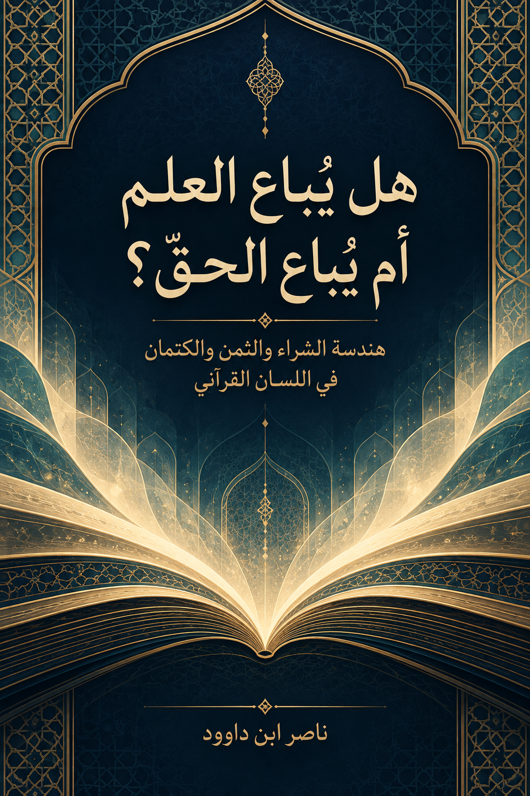

121. هل يُباع العلم أم يُباع الحق؟ — هندسة الشراء والثمن والكتمان في اللسان القرآني

بحث في الشراء والثمن والكتمان وأجر البلاغ وأخلاق التأليف والنشر، يميز الوحي المنزل من الاجتهاد البشري ويختبر التعميمات بالموارد المقابلة. يعرض نماذج عقود وإتاحة بوصفها اجتهادات تشغيلية لا أحكامًا قرآنية منصوصة. الإنجليزية مختصرة.
النسخة الإنجليزية مختصرة ومفاهيمية، وليست ترجمة حرفية كاملة؛ يبقى النص العربي المرجع الأساسي للتفصيل والإحالات.
قراءة PDF داخل الموقع / Read the PDF on this website
جارٍ تجهيز القارئ… / Preparing the reader…
ملخص الكتاب وفهرسه الموضوعي (مقتطف نصي للفهرسة والبحث)
هل يُباع العلم أم يُباع الحق؟
هندسة الشراء والثمن والكتمان في اللسان القرآني
دراسة بنيوية في تمييز الوحي المنزل عن الاجتهاد البشري، وفي أخلاق البحث والتأليف والنشر
المؤلف: ناصر ابن داوود
منهج البحث: فقه اللسان القرآني — QCROS (منهج الاستقراء والاختبار) — نظام المثاني
13 أكتوبر 2026
1 ملخص الكتاب
يبحث هذا الكتاب سؤالًا تتداخل فيه النصوص القرآنية وأخلاق المعرفة والحقوق المالية: هل تقاضي الباحث مقابلًا عن مؤلَّفٍ يعالج القرآن يُعدّ بذاته من «الاشتراء بآيات الله ثمنًا قليلًا»، أم يجب أولًا ضبط الفعل المذموم وفاعله ومتعلَّقه وسياقه؟ لا يبدأ البحث من تحريمٍ عام ولا من إباحةٍ عامة؛ بل من مدونة قرآنية يختبر فيها الشراء والثمن والكتمان والبيان والتبيّن وأجر البلاغ، مع الاستعانة بالفهرسة الصرفية والخلاف الفقهي والمرجعيات الحقوقية الدولية، كلٌّ بحسب مرتبته.
يتضح من موارد مخصوصة أن الذم قد يقترن بنِسبة ما كتبه البشر إلى الله طلبًا للثمن (البقرة: 79)، أو بكتمان ما أنزل الله والاشتراء به (البقرة: 174)، أو بنبذ ميثاق البيان (آل عمران: 187)، أو بالتلاعب بمقام الشهادة (المائدة: 106). وهذه الشبكات لا تبرر حصر الذم في فعل التزوير وحده، ولا تحويل لفظ «ثمن» إلى إدانة شاملة لكل مقابِل مالي. ويقابل الكتاب هذه الموارد بنفي مطالبة الرسل بأجر البلاغ في الشواهد المدروسة، وبموارد العمل البشري والاستئجار والجزاء الإلهي.
يقدّم الكتاب ثلاثة مخرجات: أولها تمييزٌ نصي بين البلاغ الرسالي والدراسة البشرية وخدمات التعليم والتحقيق والطباعة؛ وثانيها مصفوفةُ اختبارٍ عكسي تراجع التعميمات بواسطة الموارد المقاومة، وتُبقي حالات الفرضيات مرئية؛ وثالثها نموذجٌ تشغيلي لتدقيق عقود النشر والإتاحة المفتوحة وحقوق المؤلف من غير نسبته إلى القرآن بوصفه تشريعًا منصوصًا بتفاصيله الحديثة. ويُقرأ محور الذكر والتذكر والمثاني بوصفه مختبرًا للمنهج وحدود الاشتقاق، لا تعريفًا جذريًا مغلقًا.
مقصد التأليف والجهاد البياني: يدافع هذا الكتاب عن مشروعية تأليف كتب علوم القرآن ونشرها، ويجعلها من وسائل التفقه والإنذار والبيان والمجاهدة بالقرآن ونشر الإسلام والسلام عند قيام الحاجة. أصل التفقه والإنذار والمجاهدة بالقرآن مستند إلى نصوصه؛ أما تنزيل ذلك على ضرورة التأليف، وتعيين من يتوجه إليه الوجوب عند الاستطاعة، فاستنباط عملي يتقيد بالحاجة والاختصاص والقدرة، وقد يبلغ فرض الكفاية إذا لم يقم به غير المؤهلين. ولا يحسم هذا المقصد وحده حكم الأجر المالي، الذي يدرسه الكتاب مستقلاً.
يميز البحث قانونيًا وحقوقيًا بين آيات القرآن التي لا يملكها المؤلف، وبين صياغته الأصيلة وتحقيقه وترجمته وترتيبه واجتهاده، وهي أعمال بشرية قد تحميها قوانين الملكية الفكرية وفق نطاقها. كما يفرّق بين الاعتراف بالمؤلف وبين منع الآخرين من الانتفاع بمصنف أتيح برخصة مفتوحة، مع مراعاة شروط الرخصة المعلنة. ولا يحوِّل الاعتراف القانوني بالحقوق إلى فتوى قرآنية عامة.
النتيجة العلمية الراهنة محددة: لم تثبت من الموارد المختبرة مساواةُ كل بيعٍ لنسخة بحثية بافتراءٍ على الله أو كتمانِ ما أُنزل، ولم يثبت أيضًا أن تسمية المال «أجر جهد» تُسوِّغ أي عقد مهما تضمن تضليلًا أو حجبًا أو استغلالًا. لذلك بقي الحكم الفقهي العام على جميع صور التعليم والتأليف مفتوحًا، كما بقيت بعض معاني الألفاظ الشبكية فرضيات مرشحة للاختبار، لا قوانين منجزة.
2 كيف تقرأ هذا الكتاب؟ — دليل القارئ للاختبار لا للتلقي فقط
هذا الكتاب ليس قائمةَ أحكام جاهزة؛ إنه سجلٌّ مرئيٌّ لمسار الوصول إلى النتائج وحدودها. اقرأ كل فصل وفي ذهنك أربعة أسئلة: ما نص الآية؟ ماذا لوحظ فيها فعلًا؟ ما الذي استنتجه الباحث؟ وما المورد الذي يمكن أن يقيّد هذا الاستنتاج أو ينقضه؟
اتّبع المسار الآتي: اقرأ النص في سياقه ← اجمع موارد اللفظ والصيغة ← قارن الشواهد والموارد المقاومة ← اقترح الفرضية ← اختبرها عكسيًا ← حدّد حالةَ الادعاء ← واصل البحث إذا بقيت فجوة. لا تعتبر ترتيب هذه الخطوات ترتيبًا قرآنيًا ملزمًا أو سلسلة سببية في كل واقعة؛ بل هو بروتوكول للبحث العلمي.
عند عرض آية قرآنية، تُكتب إحالتها باسم السورة ورقم الآية: «البقرة: 79»، لا برقم السورة وحده. وإذا نُقل جزء من آية فالموضع موسوم «مقتطف من الآية». والمقتطف دليلٌ لا يستغني عن الرجوع إلى الآية كاملة وموضوع السورة والسياق السابق واللاحق.
افصل دائمًا بين أربع طبقات: نص الوحي؛ والملاحظة المباشرة من النص؛ وفرضية الباحث أو نموذجه الوظيفي؛ والتنزيل القانوني أو التعاقدي في الواقع الحديث. لا يساوي التشابه بين الطبقات برهانًا على نقل الحكم بينها؛ ولا تعني حقوق المؤلف أنه يملك الآيات أو الحقيقة.
اقرأ سجلات الحالات بعناية: CLOSED (مغلق) لا يفيد أكثر من المجال الذي حُدد له، وقد يكون إغلاقًا لفهرسة عددية لا لتعريفٍ دلالي؛ CANDIDATE (مرشح) فرضية لم تستوف جميع الاختبارات؛ OPEN (مفتوح) مسألة لم تُحسم؛ REJECTED (مرفوض) تعميم فشل اختبارًا محددًا. لا تجعل «مغلق» مرادفًا لـ«قطعي في جميع الموارد».
الطريقة المقترحة للقراءة: يبدأ القارئ العام بالملخص ثم الأبواب الأول والثاني والرابع والخامس؛ ويمكن للباحث اللساني الرجوع إلى الباب الثالث وجداول الصيغ والمثاني؛ ويعود المراجع العلمي إلى الملحق الذي يضم وقوعات الجذور، والاختبارات العكسية، وسجلات التصحيح والمصادر الأصلية.
استعمل المخططات الآتية بوصفها خرائط قراءة لا براهين مستقلة: كل سهم يمثل انتقالًا في الفحص أو علاقة مقارنة، ولا يدل بذاته على سببية أو على نص قرآني. تُختبر كل علاقة بآياتها ومواردها المقاومة قبل اعتمادها.
مخطط بصري — الخريطة العامة للأبواب الخمسة ومسار القراءة؛ تمثيل تحليلي من إعداد البحث لا نص قرآني.
مخطط بصري — سلسلة البحث: النص ثم الاستقراء فالاختبار فالحالة العلمية؛ تمثيل تحليلي من إعداد البحث لا نص قرآني.
مفتاح القراءة: ليست الفهرسة الصرفية حكمًا فقهيًا، والمخطط لا يغني عن النص، والانتقال من القرائن إلى القانون يحتاج اختبارات عكسية مستقلة.
3 الفهرس البنيوي للأبواب والفصول
1 ملخص الكتاب 3
2 كيف تقرأ هذا الكتاب؟ — دليل القارئ للاختبار لا للتلقي فقط 4
3 الفهرس البنيوي للأبواب والفصول 6
4 خريطة النسخة ودليل القراءة 9
4.1 الحدود الحاكمة لهذه النسخة 9
5 الباب الأول — تأسيس السؤال والميزان المعرفي 10
5.1 الفصل الأول — ماذا يعني أن «يُباع العلم»؟ 10
5.2 الفصل الثاني — منهج QCROS (منهج الاستقراء والضبط والاختبار) وحدود ادعاء الحقيقة 11
6 الباب الثاني — هندسة الشراء والثمن والكتمان والبيان 15
6.1 الفصل الثالث — فحص الجذر ش ر ي قبل الحكم 15